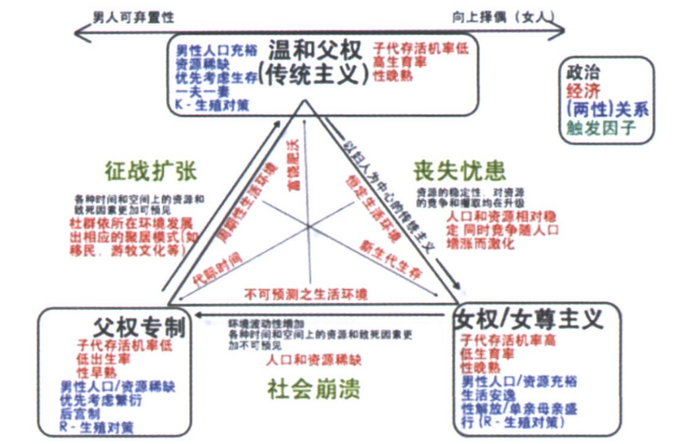
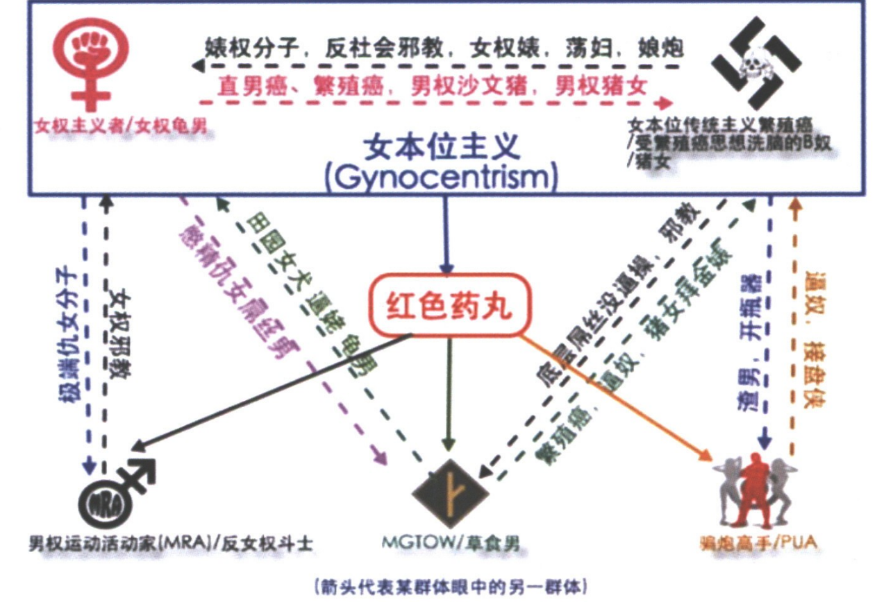

一、红色药丸是什么
在《黑客帝国》里，主角吃下红色药丸之后，看到了世界真相。
所以这里用红色药丸代表世界的真相。
二、世界的真相是什么
（一）女本位
第一个真相就是人类具有女本位本能。
1.女本位是什么？
女本位也叫女性中心，女尊，利女。
女本位是指优先满足女人的利益和需求，不惜损害男人的利益和需求，女性价值高于男性价值。
与之相伴的是雄性可弃置性。雄性可弃置性指雄性是用后即弃的工具。
两者是一体两面。
2.为什么会有女本位？
女本位是本能，就像吃饭睡觉一样，是演化的结果。
一个生物个体演化的成功程度，取决于个体的存活率、交配成功率、以及交配后产生的子代数量，三者相乘。
演化对这三者的选择分别称为自然选择（天择）、性选择（性择）、生殖选择。
生殖选择有时包含在广义的性选择，而性选择有时又包含在广义的自然选择。
（1）自然选择
一个雄性一生可以产生大量精子，但一个雌性一生只能产生有限的卵子，而且雌性繁殖有孕育周期。
理论上，一个雄性可以同时使多个雌性受精，但一个雌性在一段时间只能孕育单个雄性的后代。
这就得出一个事实，雌性数量是物种繁殖的限制因素。
比如，一个部落有100人，50男，50女。
如果成对配对，那么此部落能每9个月增加50人。
如果发生战争，死了40个男人，那么剩下的10个男人仍然能使50个女人受孕，部落还是能每9个月增加50人。
如果死的是40个女人，那么剩下的10个女人受孕，部落只能每9个月增加10人。
50男+50女 = 50人/年
10男+50女 = 50人/年
50男+10女 = 10人/年
所以，由于自然选择，不同的部落为了有限的生存资源相互竞争，那些努力保存女人的部落就留下来。也就是剩下的都是有女本位本能的部落。
（2）性选择
同一物种的两个性别，某一个性别必须竞争以取得有限的交配机会，另一个性别则选择竞争胜出者。
一方竞争与另一方选择是一体两面。竞争会淘汰劣质基因，选择会留下优质基因。
通常雌性在生殖过程中投资较多，因此对交配对象较挑剔，所以性择是作用在雄性上，但在性别角色相反的海马等海龙科鱼类上，则是作用在雌性上。
当雌性选择雄性竞争时，雄性必须迎合雌性的偏好，这也导致女本位本能。
比如，雄织布鸟通过筑巢吸引讨好雌鸟。
性选择的原理如下：
性选择的机制可以粗分为同性内选择和异性间选择。许多特征可能同时受这两种选择影响。
①同性内选择
雄性彼此竞争，获胜者得以交配。这造成有助于竞争的特征得到演化优势。这些特征包括打斗用的武器（如鹿角、象牙）和竞争展示的讯号（如体型大小、鸟羽的长度）。
②异性间选择
雄性要能够交配，必须得到雌性的青睐，因此对雌性有吸引力的特征会得到演化优势。例如极乐鸟的求偶舞、斗鱼的颜色、蝴蝶的斑纹。
雌性偏好的来源
当雌性偏好某些雄性时，这些雄性会明显有较多后代。但为什么雌性的偏好会演化出来就比较复杂。目前已知有许多不同机制，在不同的物种内的重要性各有不同，且并不互斥。
1）直接利益：雄性特征可能直接对雌性产生利益，如对子代的照顾、求偶时提供的彩礼、领地的面积和品质。
2）感官偏误：认为雌性的偏好可能源自其他功能，但被雄性利用。例如孔雀鱼对橘色食物的偏好造成橘色的雄鱼得到性择优势。
3）好基因假说：认为雌性偏好的特征可以代表雄性的基因素质，偏好特定的特征可以让后代有较好的基因。
4）性感儿子假说：当雌性偏好一个特征时，其后代会同时遗传父亲的特征以及母亲的偏好，也就是说族群中具有此特征的个体有较高的机率同时带有此偏好基因，因此当雄性的特征得到性择优势时，这个偏好基因也会一并得到优势而增加，增加的偏好又回过头来选择更多特征和偏好，于是偏好和特征就会不断增加，直到天择的力量阻止这个特征继续加强。
综上所述，几亿年的自然选择和性选择是产生女本位本能的原因。
3.女本位本能如何起作用？
人类是一种哺乳动物，人类与哺乳动物的区别就是人类大脑进化出具有意识的大脑皮层，然而人类大脑还是继承了哺乳动物的大脑结构。
在脑科学领域有诸多的人脑模型，其中一种比较直观易懂的模型叫三重脑结构。在这个模型中，人脑分为三层，一层叠在一层之上，一层比一层复杂，但一层又比一层更难控制我们的行为。
（1）虫脑
最小也是最原始的脑层叫做“蜥蜴脑”或“爬虫类脑”可简称“虫脑”。这部分大脑负责最基本的生命活动，如睡眠、饮食、心律调节、呼吸、保持平衡、性活动以及生存繁衍的本能，这一层与脑干直接相连，其功能大部分不受意识控制，比如你可以有意识地控制你的呼吸，但主要靠的还是自然反应。若非刻意，你的意识不会掌管你的呼吸活动，因为有虫脑帮你自动完成。
繁殖本能也是由虫脑管控的，当你在用下半身思考或做出一些非理智甚至可能危险的举动时，罪魁祸首就是它，它会让你满脑子想的都是啪啪啪。
（2）狗脑
大脑的第二部分被称为“边缘系统”，俗称“狗脑”，这部分脑负责防御外敌、保护自身并处理视觉、听觉、嗅觉捕捉到的信息，甚至负责长期记忆的形成。它同时也是人脑的情感中心，因为它负责调解分泌物以及肾上腺素，这些分泌物里有能产生压抑、喜悦、悲伤等情感的激素。
那些你一时兴起的、根本无法解释的直觉，就是由狗脑产生的，你所谓的“随心而动”、“跟着感觉走”也是这层大脑在起作用。你因为“坠入爱河”或者“感觉对了”而做出一个非理智的决定，都是狗脑在影响着你。
（3）人脑
第三层也就是最外层称为大脑皮层，也就是“人脑”，它负责逻辑、推理、抽象思维、以及语言、阅读、写作和复杂的运动技能的有意识控制。它是最高等也最复杂的，但也是最弱不禁风的，前面两层可以轻而易举地覆盖这层。
人受本能的操控比我们认为的多。哪怕在科技日新月异的当今时代，我们仍大受原始本能的控制，甚至到了一种难以置信的程度。想想你最近一次想要某种东西，你问没问过自己，你为什么想要？是否有一个合理的原因？还是你只是想得到而已，出于某些难以解释的感觉，你只是知道得到它能使你感到快乐和喜悦。当这种情况发生时，要明白这是在受大脑中较为原始的部分操控，你甚至都没有意识到。
而女本位本能就是刻在第一层和第二层脑中。
雄园丁鸟会为了吸引雌性构建错综复杂的鸟巢，而雌鸟会扫过一个个追求者的房子，从中选取最优秀者与之交配。松鸦雄性向雌性上供食物，以便能打动雌性来获取交配和繁殖权，这些行为并非源自女权思想或者什么海誓山盟，而是本能使然。这些本能都是为了这个物种得以繁衍生息所演化出来。而当雄性做出这些有利于物种繁衍的非理智行为后，虫脑会使我们感受到快感，而狗脑则用多巴胺内啡肽使我们感到无比欢愉。哪怕这些行为是以你的长远健康或长久幸福为代价，你此刻也会不管不顾，因为这时专司理性的人脑早就停工了。
这就是为什么当一艘船沉没时或者一栋楼着火时，优先救援女人。我们的本能就是保护女人，特别是那些拥有优秀基因、漂亮且有生育能力的女人，这也是女人在犯与男人同等罪行时从轻处罚的原因。我们的虫脑能引发对年轻漂亮且能生孩子的女人的保护本能。有魅力的女人也会引发你对她的手下留情，你想保护或打动她们，你的虫脑在下意识地敦促你与她们交配，除非刻意用意识压制，否则你只能任凭本能驱使你。
4.为什么有时候女本位本能不表现？
本能无法消灭，但是人类有人脑，可以用意识压制本能，使其不表现出来。就像膝跳反射是本能，但是可以用意识控制其不表现。
那么如何不表现？总体上就是使雄性竞争雌性选择暂时失效。
有两种情况：
（1）客观导致失效。比如战争导致男人大量死亡。女多男少的情况下，男人不必讨好女人。纵使人们在本能驱使下想表现出女本位，但是客观条件不成立，巧妇难为无米之炊。所以没有雄性竞争，也就不表现女本位。
（2）主观导致失效。比如通过教育或者宗教洗脑，让女人失去配偶选择权。虽然男人数量充足，但男人得到女人只需与其监管人达成交易即可，所以没有雌性选择，也不表现女本位。
所以要么减少男人数量，要么让女人失去配偶选择权。减少男人数量，通常是战争。让女人失去配偶选择权，通常是宗教和教育。
由此可见，想要表现女本位需要两个条件，一个是要有雄性竞争，也就是男人数量充足，一个是要有雌性选择，也就是给女人自由选择配偶权。只有这两个条件满足，女本位才表现。
5.女本位的表现是什么
我们先来看看蜘蛛和螳螂是什么样子。
黑寡妇雌蜘蛛会在交配后捕食雄蜘蛛。雌螳螂也会在交配后捕食雄螳螂。
它们这么做一是因为它饥饿，二是因为它有能力捕食雄性。
这就是最极端的女本位，为了交配连自己都献祭给雌性了。那么为什么雌性会杀死雄性？
其实这也是自然选择的结果，因为蜘蛛螳螂雌性比雄性强大，雄性竞争不如雌性选择明显。如果雌性不杀雄性，那么下次交配可能还是这个雄性，基因没有演化。而如果杀雄性，那么对雄性是一种选择，逃过雌性的聪明强壮的雄性基因更容易留下来。
为什么雄性宁愿冒死也要交配？因为那些不愿冒死交配的雄性基因没有留下来。
而人类的女本位完全表现之后就如同蜘蛛和螳螂社会一样。虽然人类是雄性比雌性强大的，不会出现雌性杀死雄性的情况，但现实中女人剥削男人，不亚于雌性杀死雄性。
下面我们对女本位的表现分一下类
（1）女权主义
宏观层面上女人主导。
女权主义的女人叫做蛛女。
蛛女都是清一色的经济独立自主，事业型女强人，高学历、高收入，高职位的三高“优质女”，“女强人”，在工作岗位上更是巾帼不让须眉，争强好胜。
女权分子反婚反育，反民族主义，反传统，将民族虚无主义发扬光大，认为不需要男人，将男人当作阶级敌人，发动性别战争，追求性别解放，谋取女性特权和福利。
女人开始接受教育，拥有经济地位，再加上社会保障，女人从依赖个体男人转为依赖干爹政府的福利制度和女性特权。这让女人产生了一种不需要男人的错觉，以牺牲男性为代价强行模拟出“男女平等”的假象。
她们的做法是把男人想方设法拉低到女人的水平上，因为把女人抬高到男人水平上是做不到的，女权发展的早期尝试过这么做失败了，于是她们注意力转移，开始对男性发起性别战争，从女本位教育制度的阴盛阳衰和给很多男孩的成长经历蒙上难以平复的阴影的仇男厌男倾向，到就业市场上的女人份额制、指标制，到职场上的男人费力不讨好被当成牲口一样使唤为了让所谓的“事业女人”能够坐办公室吹空调，再到司法系统的一边倒的偏袒女人为女人开脱，男性可以说从小到大的生存空间都受到女本位的全方位立体式的打压。
终于，女权主义得逞了，为女人营造了一个“不需要男人”、“女人能顶半边天”的泡沫，终于，女人对男人的个体依赖被干爹政府所取代，而干爹政府的钱最终还是男人创造的，也就是说男人开始作为一个集体被奴役，当然，女人不可能意识到这一点，她们本就是抽象思维匮乏的生物，一看自己对个体男人的不再需要了，就产生了不需要男人的错觉。
（2）女本位传统主义
个体层面上女人主导。
也叫繁殖癌。
主张民族主义，结婚生育，延续民族，不可避免导致女性生殖崇拜，女人金贵的信念。
繁殖癌的核心就是生育。一切都是为了生育后代，男人成功的标准是围绕女人制定的，男人的人生价值就是女人和孩子。为此繁殖癌会无底线讨好迎合女人。
从小被灌输要赚钱买房娶老婆，做个好丈夫好父亲，要承担家庭责任，要无私奉献。
等长大以后，发现社会并不把他当人，而是可弃置的工具，是战场的炮灰，是加班的苦力。他为女人付出的一切换来的是女人的嘲讽和背叛。于是男人陷入精神危机，从小被灌输的信念被现实无情击碎，进而全盘自我否定，导致自我毁灭。
繁殖癌给男人灌输：
努力读书工作挣钱讨老婆，当家里的顶梁柱、养家糊口，供养女人和小孩，否则不是男人。
为了女人、家庭、下一代和整个社会男人必须奉献牺牲自我，不计回报，否则不是男人。
泰坦尼克号沉没时你要有自觉葬身冰冷的海水里让女人上救生艇的觉悟，不能苟且偷生，否则不是男人。
男人要毫无条件地包容女人所做的一切，要迁就女人，否则就不是男人。
男人必须没日没夜累得像狗一样干活，只为换来女人岔开双腿，用她们与生俱来的东西作为回报和奖励，否则不是男人。
不管男女之间出现什么争执，问题一定都是出在男人身上，责任都要男人单方面承担，哪怕今天下雨女人也得怪到男人头上，但男人永远不能反驳，否则不是男人。
男人的成功、失败和整个人生价值必须以达到女人标准和提供财富的多少来衡量，否则不是男人。
男人单身一定是找不到女人，没人看得上的憋精吊丝，是被动被剩下没人要的货，一定不可能是男人主动选择单身。
女人单身是因为新时代女人独立自主不需要男人，剩女都是优质女，所以当代男人要想有B操必须跪舔女人，甘当奴仆。
男人出去干活养家导致女人出轨是男人的错，因为男人没有尽到丈夫的责任，没花时间陪女人导致女人空虚寂寞，所以女人出轨是理所应当。
男人不出去干活养家导致女人出轨是男人的错，因为男人没有尽到丈夫的责任，贫贱夫妻百事哀，女人没有经济上的安全感，所以女人出轨是理所应当。
而男人出轨一定要猛烈抨击，口诛笔伐，骂他是当代陈世美，一定不可能是其配偶有问题，因为女人永远是无辜的受害者。
男人的幸福和快乐的源泉也必须得是女人，男人的一切所作所为必须得围着女人转，否则男人的人生就是不完整的，没有价值的。
男人不能有自己的兴趣爱好，因为投入到兴趣爱好的精力，应该投入到女人身上。
……
而给你灌输这些信念的，可能是你的父母，老师、朋友或者任何人。跟女权主义的高亢激昂不同，这种繁殖癌的洗脑更加潜移默化，无处不在，也更加彻底。然而这还不是最要命的，前面说了女本位是人类的本能，会导致男人利他性本能。而很多男人终其一生都被其奴役而不知道问题在哪，如芒刺在背，而男人又是天生为解决问题而生的动物。问题得不到到解决会使他苦恼和纠结，直至将其逼疯，永远深陷在挣扎和懊恼中不能自拔。这就是当代女本位社会里男人的真实写照。
如果你不听从这些信念，那么你会面对无数的羞辱和咒骂，像屌丝，渣男，仇女分子。
繁殖癌完全接受女人仅仅作为一个女人活着，她们的子宫就是价值。繁殖癌眼中，女人做一个母亲可等价于男人做一个科学家。但男人仅仅作为一个男人活着，繁殖癌是绝对不会接受的，男人必须要干点什么，当科学家也好是送快递也罢，必须要体现这样那样的利用价值，所以在这样的社会里，女人才算是真正的Human Being，而男人则只能算是Human Doing。
繁殖癌的男人再成功也是屌丝，因为他只是在迎合女人罢了，正所谓，男人征服世界得到女人，女人征服男人得到世界。
繁殖癌能无底线到什么程度？看看美国女人选举权的例子，当初一个州的繁殖癌由于渴望交配权开始以女人的选举权作为筹码来得到女人。结果就一发不可收拾，从一个州蔓延到了全国。那个州由于西进运动男女比例悬殊，导致了繁殖癌不择手段获取交配权。繁殖癌可以不择手段到以全体男人的利益为代价满足自己暂时的交配权。由于雄性竞争，男人之间不具有女人之间的凝聚力，相反，男人天生会对另一个男人产生敌对意识，又由于主导意识要在自己的领域证明自己最强。一个男人看到另一个男人吃苦受罪首先想到的不是同情或帮助，而是下意识地觉得自己少了一个潜在的威胁，生活中某某男人遭遇不测根本不会得到其他男人的任何同病相怜，他们能不幸灾乐祸就已经不错了。男人丝毫不会在意其他男人遭遇不幸，同样女人也不会在意，没有人会在意，这就是为什么男人自杀率是女人的四倍以上。
现在四五六十岁的人基本上都是繁殖癌，包括你的父母，政府官员等。
父权制的传统社会强调权利和义务的对等，这是一种非女本位的传统主义。在那种社会里男人虽然要承担抚养和保护女人及家庭等义务，但同时作为一家之主享有权力和权威，但繁殖癌不一样，它虽然也打着传统主义的幌子，要男人承担责任却不给予男人相应的权利，只让男人做无条件的自我牺牲且不求回报，因为女人是弱势群体需要保护、需要特别的关注和特殊照顾，如果男人不听就羞辱男人。
蛛女在特定情况下也是会转化成猪女的，比如如果一栋建筑着火或泰坦尼克号要沉了的时候，她们平日里那副不做生育机器，巾帼不让须眉，反对物化女性的嘴脸立刻收起，转而借着子宫要挟男人牺牲自我好让她们逃出生天，繁殖癌护逼使者这时也会为她们大开绿灯，而到了自己有恃无恐的时候，又变回蛛女，拒绝生孩子，毕竟那是物化女性嘛，女人怎么能是个生育工具呢，说白了这就是占着茅坑不拉屎的行为，这种蛛猪双面女可以说是“蛛女”和“猪女”两种模式无缝切换。
（3）中华田园女权
女权主义传入中国以后，变了味，变成了中华田园女权。中华田园女权基本上就是诈骗犯。
中华田园女权的特点是:
跟女权一样谋求政府福利和特权，但经济不独立。
跟繁殖癌一样让男人供养自己，但不尽生育的义务。
就是不管宏观上还是个体上都好处占尽。
常见的中华田园女权：
一种是以婚姻是对女人的压迫为由多要彩礼，让男人买房加她的名字，等到结婚没几天就离婚，彩礼不退，还要分男人的房子，根本不会给男人生孩子。比如翟欣欣。
一种是跟男人在一起，赤裸裸向男人索要财物，其实就是让男人供养自己上学考研考公，一旦上岸就踹了男人，根本就没想过跟男人结婚。上岸第一剑，先砍意中人。比如知乎加贝老师
关于如何把男人财产变成女人财产，可以搜索龙飞律师。
6.女本位完全表现的结果是什么
（1）女权主义导致结果
一方面男人作为整体被系统性剥削奴役，苦难加深。另一方面导致生育率下降。
在宏观层面上，女人进入体制内，开始掌管国家权力，女权思想侵入政治经济文化等各个领域，在制度上系统性剥削男人。男人作为整体彻底被奴役，女权分子对男人无限打压，敲骨吸髓，再看看那些女权主义高度发达的所谓第一世界国家的男女自杀率，就更说明问题了。
比如岳父灭门女婿一家案，货拉拉跳车案，阿里性侵案，朱军案，霍尊案，德普家暴事件，清华腚姐，北骟大电梯事件，川大厕所事件，川大张薇，徐汇中学胡晓思，张恒案，女子把老公藏冰柜案。
比如女子拿刀抹司机脖子，不仅无事反而被警察补偿1500元；女人犯罪记录封存等。
过去女人需要婚姻为男人生孩子换取男人供养她。现在她一个人就能活得挺好，所以不需要婚姻了。导致生育率下降。
（2）繁殖癌导致结果
一方面男人在个体上被剥削奴役，苦难加深。另一方面导致生育率下降。
男繁殖癌因为过分讨好女人，导致逼价水涨船高，进而导致更多男人娶不到老婆，娶不到老婆又进一步推高逼价，进入恶性循环。最终导致生育率下降。而娶到老婆的也付出巨大代价。
女繁殖癌，叫做猪女。她们不像女权分子仇视男人，而是把男人当成工具和财富源泉。
她们认为女权那套男女平等，妇女能顶半边天理论纯属扯淡，这么搞下去会把长久以来女人利用男人为自己谋利的本钱搞丢。也认为婚姻不是对女人的压迫，而是让男人成为长期饭票的工具。女人不应该去干活，应该让男人去干活，自己只负责两腿一张就数钱，完成生育的使命就行了。但又加上女人的高攀择偶本能，她们只会选择更有价值的男人，也就会跟男人要价更高，比如天价彩礼。而这也导致男人没有能力娶老婆。最终也导致生育率下降。而娶到老婆的也付出巨大代价。
在个体层面上，男人为了女人买房，掏空六个钱包，背上巨额贷款，从此成为奴隶。还有刚结婚就离婚，天价彩礼一分不退。还有更惨的，直接净身出户，被女人归零。
离婚的三种结果：
①坐以待毙。分一半财产甚至全部财产给女人，负担一个不一定是你的种的孩子的抚养费（如果这个孩子有先天残疾，你需要终生抚养，于是西方国家很多女人都会怀孕期间糟蹋身体，生出先天畸形孩子，来套取男人的终身抚养费），而孩子的抚养权不是你的，孩子长大也不认你，抚养费与收入相关，如果你失业了，依然要按原数目交，交不上就要进监狱，要么请律师等着败诉，当然这时候你可能根本请不起律师了。比如李国庆离婚净身出户，王力宏离婚，王宝强绿帽事件。
②逃亡主义。趁着司法部门还没有找上你，乘坐飞机迅速逃到外国，黑在当地，永远不要再回去。注意不要通过银行转账，否则会被盯上，资金也被冻结。有人通过比特币，把钱倒到国外。所以说，西方结婚是对男人的考验，包含两个含义：一是聪明男人不会结婚，二是结婚之后与女人斗智斗勇最终生存下来，说明智商不会太差。
③离开这个世界，去往极乐世界。但是你的死不会引起一丝涟漪。她们会说你肯定是做了对不起老婆的事所以死不足惜，总之一切罪责都怪到男人头上，一切黑锅都是男人来背，女人都是无辜的受害者，都是圣洁的白莲花。比如翟欣欣逼死苏享茂事件
女权分子和繁殖癌其实是殊途同归，前者是利用福利保障制度从宏观层面剥削男人，后者是从个体层面剥削男人。而它们都导致生育率下降。
不管是女权癌还是繁殖癌，都根本不会在乎男人的利益。前者哄抬逼价的手段虽令人不齿，但你逼价再高男人大不了不买，寻找替代品，但繁殖癌的强买强卖的行为就更令人发指了，你强买强卖起码把女权分子和龟男炒起来的逼价压下去吧，繁殖癌不是，他们无视如今泡沫般飞涨的逼价，逼迫男人前赴后继地牺牲在传宗接代的祭坛之上，只为保证族群的延续。繁殖癌反女权是脱离不了自身的局限性的，女人子宫是生育率的限制因素，这个命门被女人所把持，这就决定了他们反女权过程中的投鼠忌器，让你感觉总有什么地方反得不彻底，总有一层窗户纸没捅破一般。他们动不动就“我们只是反女权但不反女人”，“禁止仇女思想”，“男女平等、男女协调乃人类发展的终极之路”等高大上的言论，我这里对这些言论本身不置可否，但这些政治正确言论无异于在放烟幕弹，对真正的问题闭口不提，对女人本质的讨论三缄其口，对当代男性面临的真正问题更是遮遮掩掩。很多男人觉得反女权的都是自己的同盟，实则相反，敌人的敌人不一定就是盟友，狼和羊是敌人，狼和老虎也是敌人，但不代表羊和老虎就是朋友。不管这两者如何撕逼，不管她们谁占上风，都不可能在乎男人的利益，受害的永远是男人。
（3）中华田园女权导致结果
一方面男人在个体上被剥削，苦难加深。另一方面导致生育率下降。
可见不管是何种女本位表现，最终结果都是一样的，男人被剥削和生育率下降。
女权为实现所谓的男女平等，先是试图把女人拔高到男人一样的高度，发现做不到，遂改为打压、精神阉割男人将其拉低到女人一样的水平，但男人才是社会的建设者和维护者，削弱男人无异于自毁长城，这也决定了女本位社会的灭亡。
女本位社会资源丰富，生活安逸，性解放，单身母亲盛行，生育率低，女人要么性解放乱搞，要么妇女能顶半边天一心扑到工作上，多年以后这种社会什么样？乱搞的堕胎生不了，一心工作的成了高龄产妇生出智障，整个社会已经生不出孩子了，但还要维持整个社会的高福利几乎不可。
想要提高生育率，根本还是要压制女本位。看看现在世界上生育率高的国家都是些什么国家。
之前提过如何不表现女本位，就两条：
①减少男人，现在是和平时代，不能战争，那就只能降低男人结婚意愿，与女人博弈。
②限制女人的配偶选择权，现在也不是古代不能搞父母包办那套，那就限制女人的权利降低女人的经济地位，比如限制女人接受教育，不招女性员工，离婚不能分男人财产。总之就是限制女人使她只能依赖男人。
7.女本位周期理论
人类文明被子宫左右。
（1）父权专制社会
资源稀缺，导致族群竞争加剧，互相屠杀，繁衍是最重要任务，所以女人成为生育机器。
被征服者的男人屠戮殆尽，女人会向征服者投怀送抱，这是由女人的高攀择偶本能驱使的。这也是女人天然不具有民族主义的根源，想要女人具有民族主义只能通过后天教育。
极端父权制社会什么样，看看伊斯兰国就可以了，那种社会里男人互相屠杀，女人是男人相互抢夺的资源，这是一种纯粹的达尔文主义的社会，人以动物的状态生存，所以这种社会跟原始社会非常相似，虽然这样的社会没有表现女本位但也绝不是男本位，因为不管社会是什么状态，雄性可弃置性是一个永恒的基调。你作为一个男人当然不愿意生活在那样一个社会里，因为这种社会里男人相互残杀，男人的命如草芥。
（2）温和父权社会
经过惨烈厮杀之后，成功繁衍壮大的族群淘汰失败的族群成为最终胜利者，之后的重点是本族群人口的稳定延续，温和父权就出现了。
这种社会，出现稳定的家庭制度，男人尽保护女人的责任，是保护者和奉献者，同时拥有家庭和社会的主导权，是管理者，女人享受男人的保护和照顾，同时尽养育后代的责任。这样的社会阴阳调和，是最稳定的。
这样一个温和父权社会是一个所谓阴阳调和，权责对等，符合自然规律的社会。注意我没有说这样一个社会是平等的社会，因为男女本身就有别，不可能真正平等。而且在这样一个社会里女人也是乐得其所的，虽然她们没有主导权，但她们不用承担那些男人承担的义务。女人天生就不喜欢承担责任，女人跟男人的一个区别就是比起自由更重视安全感，这是她们的天性。当年美国女人争取选举权时得知要获得选举权就必须承担服兵役的义务，美国女人毫不迟疑就放弃了选举权。直到后来美国的女本位主义发展到不可救药的时候，女人不用去战场送死也可以获取选举权，她们才获得了选举权，女人想反正不要白不要，只有权力不用承担义务，那我就拿好咯。现在西方女权发达的国家都在批斗沙特是一个极端男权社会，其实沙特正是一个男女协调的传统社会，问题不是沙特太过男权，而是西方的女本位已经发展到登峰造极的地步而不自知，看到任何一个没有女本位的社会都觉得是男权，真是典型的精神病看比他正常的都觉得是精神病。女权分子所反的父权专制实际是沙特这样的温和父权制社会，对于真正的极端父权制，女权主义是三缄其口的。你要知道女人的本性就是崇拜征服者，她们才不会因为你平时跪舔她们就在打仗的时候跟你站在一边，她们会毫不犹豫地向征服者投怀送抱，而被征服一方的男人则是被宰杀和奴役的命运。有人说主要是中国女人有这样崇洋媚外的本性。错，全世界只要是女人都有这个本性，不信的话看看二战时期的沦陷区的法国女人就知道了。
有人说男人主导一切，女人根本没有权利云云，这难道不是男本位？错，这正是女本位的典型思维，即从女人的角度出发，只看到女人没有男人拥有的权利，却没看到男人所付出的牺牲和承担的责任。在温和父权社会里，由于男人对这个社会付出的多，得到的回报相应的也多，他们虽然对女人拥有权威和支配地位，但仍承担照顾和保护女人的责任，一旦天灾人祸顶在前面的一定是男人，他们充当着这个社会的建造者，维护者和生产者，虽然女人在传统社会里没有权力，但那些权力本身就不是她们应得的，因为天灾人祸顶在前面的不是她们，高危行业从业者不是她们，重大问题也不需要她们解决，她们在那种传统社会里唯一的任务就是保证种族的繁衍。有人说虽然男人冲锋陷阵舍生忘死，但女人生孩子也不容易。呵呵，美国一个女人做着梦就把孩子生下来了，我不知道您怎么得出的结论这比当一个好的士兵，工程师，程序员更难。有人说还有女人难产呢，那我还说女人生孩子还有一定或者说很大几率母子平安呢，而男人上战场呢？不论什么时代，不论胜败，战争总有一方是要死人的，总有一个家庭要失去家人，这两者压根就不在一个层面上，无法相提并论。
前面这两种社会都没有表现出女本位主义。父权专制是因为相互屠杀，男少女多；温和父权是因为宗教洗脑，剥夺女人配偶选择权，比如伊斯兰教，儒教。
（3）女本位社会
从温和父权到女本位社会的触发器是丧失忧患意识。因为物质生活极大丰富，女人开始拥有经济地位，社会少有战乱灾害，人们丧失生存威胁，从而男人扮演的保护者角色不那么明显了，于是男人逐渐丧失家庭和社会的主导权。
上面讲过女本位的表现，一种是女权主义，一种是繁殖癌。
这种社会是人为模拟出的蜘蛛模式，是女人对男人的剥削。
（4）女本位社会如何回到父权专制社会？
因为崩溃的生育率和恶化的经济情况。
上面讲过女本位表现之后导致的结果是男人被剥削奴役，生育率下降。
但男人才是社会的建设者和维护者，削弱男人无异于自毁长城。生育率下降，但还要维持整个社会的高福利，怎么办？一是开放移民，欧洲就是这么做的，但两个文明的碰撞一定不是温和的，当女尊主义社会碰到父权社会时，一定会被完爆，因为女尊社会阴盛阳衰，娘炮遇到阳刚，女人因为高攀择偶本能肯定选择阳刚，所以欧洲绿化，美国拉美化不可避免。整个族群被替代，最终回到父权社会。二是摆烂躺平，削减福利。男人不再搭理女人，女人原来想用生育拿捏男人，结果男人已经不接招了，男人不再供养女人，女人的经济地位一落千丈，最终还是不得不依附于男人，又回到父权社会。三是男人揭杆而起，发起对女人的性别战争，以暴治暴，暴力是世界的元力量，而人类雄性比雌性强，所以男人最终完全控制女人，最终又是回到父权社会。
至此就完成一个循环。
所以叫女本位周期理论。
这一整个周期中，男性个体的生命价值始终不会高于女性，男性的生命在不断的竞争与磨砺中大量损耗，保护垄断生殖资源的女性。
这个循环在历史上就发生过。古罗马在鼎盛时期发展出了一波女权主义小高潮，女人享有各种特权，全面性解放，可以背着丈夫跟角斗土乱搞等等，整个社会文化日趋荒淫、糜烂，导致人口减少、城市衰落、直至日耳曼蛮族的入侵，帝国大厦分崩离析，欧洲进入漫长黑暗的中世纪。
当然这些都是从整个人类社会、国家这样较高层面讲的。而其循环的时间跨度都是以数百上千年为尺度计量的。没有人会真正亲历整个循环过程，所以很多人把循环的一个环节当成人类发展的永久趋势也就不奇怪了。所以我们不如放低视角，看看一个企业的生命周期。当一个创业公司刚起步的时候往往不惜担“性别歧视”的罪名也要尽可能地招到男人，因为他们深知谁才能真正地创造财富和价值，这个时候装逼那就是找死，他们根基未稳，生存是第一要务，当然压根顾不上那些虚头巴脑有的没的。而当这个公司在男人辛勤汗水的浇灌下经历了从无到有的原始积累之后，创造出越来越多地坐办公室吹空调的岗位后，有闲暇时间想想改善性别比例的事了，才开始越来越多地引入女人，从此就一发不可收拾了，女本位主义在这个公司将大行其道。而这个阶段的公司当然是偏向招女人的，但女权主义者逼逼的性别歧视都会选择性无视。然后女人逐渐把持公司，整个公司的效率开始下降，最终走向倒闭。比如雅虎女总裁，多益网络女总裁。

（二）两性本能
第二个真相，除了女本位本能，两性演化出了截然不同的本能。
1.男性本能
（1）主导意识本能
雄性竞争产生主导意识本能。因为只有在竞争中获胜的雄性才能获得交配机会。
主导意识，就是凡事都要争第一。哪怕是打游戏，也要争第一。就是你是老大，别人都得听你的，你敢指挥别人。
特征是以自己为中心，优先满足自己的利益和需要。
机制是在取得主导地位之后，大脑会产生让人愉悦的感觉，也就是成就感。不取得主导就会产生紧张焦虑感，容易陷入自我否定。
主导意识可以被利用。比如女人会利用现男友去对付前男友；女人利用男人在自己擅长的领域为她们服务。
比如抱大腿，你想利用大牛的能力，那你就得表现出佩服他的态度，让他获得成就感，这样他才带你。
（2）解决问题本能
雄性竞争产生解决问题本能。
就是遇到问题一定要解决掉它，设定的目标一定要实现。
机制是如果不解决掉它，大脑会产生让人紧张焦虑的感觉，而一旦解决，就会产生成就感。
（3）牺牲自我本能
不给女人供养奉献的，后代资源不足夭折淘汰，给女人供养奉献的后代茁壮成长留下来。这种供养注定了男人牺牲自我的本能。
2.女性本能
（1）慕强择偶本能
慕强择偶也叫高攀择偶。
慕强择偶是择偶时选择价值排序更高的配偶。只有更高没有最高。
因为女人生育投入资源比较多，不像男人一哆嗦，就完事了。如果生下的后代不适合生存，那损失就太大了，所以必须谨慎选择配偶，选择更优秀的配偶，生下的后代就更优秀。
这种本能可以解释现在的很多现象，比如剩女现象，剩女多集中于城市，剩男多集中于农村。也能解释为什么女人进入更优越的环境会嫌弃原来的配偶，比如农村女人进入城市后和农村男友分手，有些女人出国后与国内丈夫离婚。
高攀择偶可以被利用。比骗炮高手，就是通过打压对方价值抬高自己价值，让女人觉得男人价值排序比她高，她配不上这个男人。对女人爱搭不理、俯视甚至藐视，制造一种我不是非你不可的假象。这样会激发女人慕强本能，让女人沉迷你。
不了解这个本能的就惨了。比如备胎舔狗，以为一味讨好女人，就能得到她的芳心，殊不知这样只会让女人觉得这个男人价值排序比她低，配不上她。她不会爱这个男人，不过她还是会让男人继续围着，毕竟备胎工具人确实有利用价值。
（2）安全感与驯化本能
安全感就是让男人供养自己。
女人孕育后代，需要充足的资源，投入资源不足的后代更容易夭折，所以女人担心男人离开他，担心男人不供养她，从而产生强烈的不完全感，所以女人也有了需要安全感的本能。这就是为什么女人会说喜欢暖男，喜欢男人对她好。也能解释产前抑郁症，其实产前抑郁症就是害怕被雄性抛弃的不完全感。这种不安全感在月经后八天（安全期）表现最明显，这几天女朋友的脾气普遍不好。
浪漫本质就是满足女人的安全感，供养女人。女人喜欢浪漫，还是因为这不完全感。反之如果一个女人为男人赴汤蹈火送死，还有人会觉得浪漫吗？
驯化是与安全感相伴的本能。驯化也叫精神控制，或者叫pua，就是让男人失去主导地位，乖乖听女人的话，源源不断地供养她，而且越优秀的男人，越要留住他。如何让男人源源不断供养自己？性价比最高的方式就是驯化男人，毕竟自己累死累活也弄不到几个钱。
逃避责任是另一个与安全感相伴的本能，女人不喜欢承担责任解决问题，遇到问题时，她们喜欢让男人去解决。就是把男人当工具人。
当男人激发女人的慕强本能，女人想得到男人，女人为了安全感开始驯化男人，一旦驯化成功，男人变成供养者，女人慕强就会终止。所以慕强与安全感是矛盾的，女人在两者之间左右横跳。女人天生就是这么矛盾的动物。
启示：永远不要满足女人的需求，因为她们永远不会满足，俗称蹬鼻子上脸。即使你满足了她们99%的需求，她们仍然挑剔剩下的1%。从宏观角度讲，也就是为什么明明社会在偏袒女人，给予她们各种保护和特权，女人仍然觉得自己是受害者的原因。作为男人你要知道你无论对女人多好，她仍然会对你满腹抱怨和牢骚，希望你对她更好，所以你何必费事呢？唯一让女人闭嘴的方式，是用你身上的某个部位堵住她的嘴。
现在我们知道女人有驯化本能了，那么女人是如何驯化男人的呢？
①驯化是什么
驯化又叫精神控制或者pua。
驯化的本质就是双标，我可以，但你不可以。双标本质就是主宰，我是主你是奴。目标是让对方服从我们，说难听点就是驯狗。
再进一步分析，其实就是区分工具和目的。
因为人有两重性：工具性和目的性。比如奴隶与主人，主人利用的是奴隶的工具性，来满足自己的目的性。主人当然也有工具性，但他的工具性是由自己利用的。
而驯化的目标就是利用对方的工具性，满足我们的目的性。对方以为在满足他自己的目的，实际上是被当作我们的工具而不自知。俗称被人卖了还帮人数钱。虽然你挺能挣钱，但最终钱全归我。
②如何驯化
分两步：
第一步，打压对方价值和抬高我们价值，让对方觉得不如我们。核心关键是熟练运用关注点的转移。
有两种具体方法：造假和隐瞒。
造假包括假的对方的缺点问题和假的我们的优点成绩。
隐瞒包括隐瞒对方的优点成绩和隐瞒我们的缺点问题。
通过造假和隐瞒，只关注对方的缺点问题和我们的优点成绩，贬低对方，夸奖自己。
通过造假和隐瞒，不关注对方的优点成绩和我们的缺点问题，决不夸奖对方，决不贬低自己。
常见的话术有：抛开事实不谈，难道你就没有问题了吗？虽然我有错，但是你竟然敢发现我的错，你是何居心？就算我有错又怎么样，你不一样有问题吗？别以为你有多了不起，比你强的有的是。虽然你取得了成功，但还是不如那谁谁谁。你看那谁谁怎么怎么样，你就不学学？你干啥啥不行，吃啥啥不剩。
长此以往，必然会摧毁对方的自信，完全拿捏对方，方便我们走下一步。
第二步，命令支配对方，满足我们的目的。
一旦摧毁对方自信，我们就能命令他做任何事，给对方立任何规矩。我们能定义什么是对的，什么是错的，什么是好的，什么是坏的。
当对方按照我们的命令行事时，可以给他一些夸奖；当对方不按照我们的命令行事时，就贬低辱骂他。
常见话术有：你要、你应该、你必须如何如何。还有像绝对，唯一，这样的字眼。
把这个方法推广到国家层面，那就是在文化教育审美等领域，pua对方国家。 媒体上，教材上，审美上只出现对方负面的内容和我们正面的内容，不出现对方正面的内容和我们负面的内容。
长此以往，对方的认识就会形成条件反射。对方一想到他自己满脑子都是负面的东西，一想到我们都是正面的东西，自然就会产生自卑甚至自恨的心理，最终向我们俯首帖耳。这样在国家层面上我们就把对方拿捏住了。就可以命令对方国家按照我们的想法做事，逐渐改造对方国家。
我经历的最经典的要属，华盛顿砍樱桃树，地震中的父与子，爱迪生阑尾炎手术，德国下水道，日本马桶水，日本洗七遍盘子，中日夏令营比赛了。小时候懵懂无知，看了许多《读者》《意林》，一想到外国时就莫名感到自卑，对老外的指手画脚竟然打心底里听从，然而一直不知道这一切的原因出在哪。
长大了，终于明白了pua的原理，才知道人的认知是可以操控的，而且极其容易。从小经历了这么多毒教材，毒报刊，毒媒体的浸润，没变成殖人公知，想想都是万幸。
说完了pua的原理，你就应该明白了，如果一个人关注你的缺点问题多于你的优点成绩，经常命令支配你，但拒绝你命令支配他，你就要注意了他是不是在pua你。
③被pua的后果
一个人被pua之后，他就不是他自己的主人了，别人成为他的主人，他变成别人的工具，说难听点就是狗。他彻底失去主导意识，或者叫主体意识，自主意识。他变得不自信，对别人言听计从。他不重视自己的利益和需求，而是以别人的利益和需求为优先，他永远认为别人比自己更重要，永远认为别人的评价比自己的需求更重要。当别人侵犯他的利益和需求时，他不会反击，他会逆来顺受，甚至他宁愿死也不会反抗。他完全以别人的评价为标准行事，一切都是为了求得别人的认可，他不敢对别人有任何的评价和忤逆。他会跪舔别人，他会认为别人的屎都是香的，自己的饭都是臭的。殖人公知应该是被pua的终极形态了。虽然话说很难听，但是pua的功效就是这么神奇。
最悲惨的人生莫过于小时候被家长pua，上学了被教师pua，工作了被领导pua，结婚了被对象pua，出国了被老外pua，一直被pua直到埋进土里。
所以我建议，作为一个道德高尚的人对别人要慎用pua，因为这是个杀器，用多了后果会很严重。
④怎么对付pua
对付pua的方法就是以其人之道还治其人之身，也就是反向pua。虽然我不建议主动pua别人，但是反向pua，属于防守反击，所以无可厚非。
反向pua，也是pua，所以还是上面那两步。
第一步，打压对方价值，抬高自己价值，让对方觉得不如我们。关键就在于熟练运用关注点的转移。
方法也是造假和隐瞒。
从上面可以发现，关注点一共四个：
1）对方的优点成绩
2）对方的缺点问题
3）我们的优点成绩
4）我们的缺点问题
对方把关注点放到1和4，那么我们一定不要去接他的茬，而是强行把关注点转移到2和3。
而平等尊重是，对方关注3，则我们关注1；对方关注2，则我们关注4。但这种方式，越来越可遇不可求了。
所以，我建议大家，平时多学一些贬低羞辱人的脏话，以备不时之需，毕竟大家从小受到的教育是友善不说脏话，贬低人的话术训练太少。脏话就像核武器一样，虽然不经常使用，但是绝对不能没有。
第二步，命令支配对方，给对方立规矩。永远不要忘记以我为主的信念，也就是主导意识。
时不时命令对方为我们做些事，如果他按照我们的想法做事，可以给他一些夸奖，如果他不按照我们的想法做事，就贬低辱骂他。
对方命令支配我们，那就反问他为什么不做却要我们做，或者他为什么能做我们却不能做。
（3）自私本能
女人孕育后代，需要充足的资源，投入资源不足的后代更容易夭折，所以女人千方百计索取资源。经过亿万年演化，不拼命索取的淘汰，拼命索取的留下来。而拼命索取注定了女人自私自利的本能。
（三）爱情本质
第三个真相就是，爱情的本质是发情。
1.爱情是什么
爱情只是发情的文学表达。
2.发情是什么
急欲和异性性交的现象。在生理上表现为排卵，准备受精和怀孕，在行为上表现为吸引和接纳异性。
3.发情的过程
雌性首先是卵巢上的卵泡发育成熟，继而排卵；卵泡分泌的雌激素引起性欲，接受雄性动物的爬跨；同时发生生殖导管的黏膜充血、水肿，黏液增多，子宫颈放开等生理变化。
出现发情行为和生殖生理变化的时间为发情期。各种动物发情期的长短各有不同，动物的两次发情期之间的时期为休止期。发情期和休止期有规律的交替出现，这种周期性的变化称为发情周期。
动物的发情期是必须与提高后代的成活率相适应的，一般的小型哺乳类多在春天，因为他们的孕期很短，可以在夏季产子，大型哺乳类，比如说鹿是在秋天发情的，他们的孕期较长，会在来年的春季产子，只有这样才能保证后代有充足的食物并且提高成活率。
4.所有动物都有发情期，但是人的发情期却消失了，为什么？
所谓消失，是指在一年中的任何一个季节里，在女性月经周期的任何一天当中，都可以发情，导致男性很难判断女性是否排卵。但是人类女性还或多或少保留了一点发情期的痕迹，即在排卵期，会性欲高涨，而在另一些日子里，性欲则相对微弱。但是这仅仅是性欲强度上的区别，而不是动物那种完全不能发情。男性发情期的消失更为明显，他们已不存在这种周期现象了。
可能原因有：
（1）父方投资假说：该假说认为，女性隐藏排卵期，使得男性不得不多次与同一名女性交媾以确保自己留下后代，而不是选择与更多的女性发生关系。
（2）减少杀婴假说：该假说认为女性隐藏排卵期并多次交配可以防止男性杀死非亲生后代。俗称戴绿帽。
（3）社会联系假说：认为女性在更长的时间里接受更多的性行为可以有助于防止周期性男性间激烈的争斗，维持有序的社会秩序。
（4）性奖励假说：认为参加狩猎的男性原始人用肉与女人交换性交的机会，于是一些女性开始模仿发情期的征兆以换取更多的肉，久而久之反而失去了真正的发情期。
（5）通奸假说：认为女性在夫妻关系中也能与其他更优秀的男性交合。她的伴侣无法怀疑后代的来源，从而愿意承担抚养的义务。还是戴绿帽子。
（6）直立行走的副作用：人类从树上跳下来以后，更容易受到大型肉食动物的袭击，因此她们选择了更紧密的群居生活。这个时候，发情期具有的外阴肿胀等视觉信号就变得不那么必需。而直立行走使得男性的视线脱离的女性的外阴，这肿胀的信号显得越来越无用。而且这种肿胀很有可能会影响人类正常的双足行走，于是没有发情期的原始人筛选了出来。
5.现在我们知道男女随时都能发情了，但触发发情的条件是什么？
男人发情条件是健康美丽的女人，也就是白富美。男人看中的是女人的生育能力。
女人发情条件是由慕强择偶本能决定的，只要激发慕强就会发情，所以可以直接认为女人发情就等于激发慕强。条件是价值排序比自己高的男人，也就是高富帅。女人看中的是男人的地位和资源。
一旦男人价值排序比自己低，她就会停止发情。
所以说女人不爱男人，或者说女人的爱与男人的爱不同。男人的爱是爱女人本身，毕竟你不可能将美貌从女人身上剥离。而女人的爱不同，她爱的是男人拥有的东西，她把男人本身和男人价值分开看，她能把男人的东西从男人身上夺走，然后把男人抛弃，就像把盒子里的东西拿走，再扔掉盒子。想想你身边的案例，男人一旦一无所有，无法创造价值之后，女人是如何对待他的。
6.性行为
发生性行为的条件是什么？
一般情况，发生性行为必须要发情才行，二者是绑定的。
男人发生性行为的基本条件就是对这个女人发情，如果不发情是绝不会与她发生性行为，想像一下凤姐脱光了站在你面前，你想跟她发生性行为吗？即使她再怎么说服你。所以说男人是视觉动物，下半身思考。这种性叫做“本能反应性”，就是发情导致发生性行为。
而女人与男人不同，她有两种性，一种也是本能反应性，另一种叫协调交易性。协调交易性就是在不发情的情况下，通过逻辑说服，协调沟通之后发生性行为。可见女人的发情与性行为分开了。女人的这两种性分别对应慕强本能和安全感本能。
因为女人有两种性，所以女人发生性行为的条件就变成两种：一种是激发慕强，从而触发发情，进而导致本能反应性；一种是满足女人安全感本能，在不发情的情况下，导致协调交易性。
因为女人有两种性，当女人遇到比配偶更优秀的男人时，本能反应性就会发作，所以女人有给男人戴绿帽的本能或者叫东食西宿本能。
东食西宿本能本质上就是慕强和安全感叠加的结果。因为女人有这两种相互矛盾的本能需求，而往往一个男人无法同时满足她这两种需求，所以女人就只好从两个男人身上满足这两种需求了。
为什么女人往往无法在同一个男人身上满足两种需求？
第一，通常一个男人无法表现两面性。因为这两种需求是矛盾的，女人既要男人对他好，又要男人对他坏。男人表现出这两面性就像是反复无常的神经病，一会好，一会坏，看起来就像精神错乱。所以一般一个男人要么对女人一直好，要么对女人一直坏。
第二，很多女人压根不知道或者她知道但不坦诚自己的慕强本能。因为慕强是本能，所以如果不是有意识地分析，根本就意识不到。即使意识到了自己的慕强本能，但是女人也会不跟男人坦诚，因为这会让男人觉得女人是个荡妇。在古代，如果众人对女人的评价是荡妇，那女人可能会浸猪笼。而且女人还有安全感的本能，所以女人也不希望男人对自己不好，没有女人会说我希望你对我坏，我希望你他妈把我当成一个婊子，这样我才会爽。
所以，就导致女人从好男人身上无法满足慕强，往往被那些不喜欢他们的渣男坏男人伤害。这就是女人所处的一个困境。现代社会的女人为了满足两种本能需求，他可能会跟贝塔男长期在一起，但是会出去找阿尔法男人上床，也就是东食西宿。而你学习红色药丸，你知道了女人的两种本能，你就可以去拯救他，帮他摆脱困境，你做的事情不是在伤害他，你做的事情是在拯救他。所以不要觉得红色药丸它是一个很残酷很卑劣的东西，它只不过是一种方法一种手段，没有好坏对错，就像刀一样，可以用它做菜，也可以用它杀人，关键在于使用它的人。所谓菩萨心肠，魔鬼手段，说的就是这种情况。它可以是你人生的解药，它不但可以帮助你，还可以帮助女人摆脱困境。
在古代，女人东食西宿本能表现得没那么明显。但是现在已经表现得淋漓尽致。下面说一下发展过程：
在古代，避孕技术不发达，女人随便与男人上床，代价巨大。如果因为本能反应性怀上别的男人的孩子，那么最好的后果也得是被配偶抛弃，独自抚养孩子，而女人又没有经济地位，所以想独自养活孩子几乎不可能，而更可怕的后果是因为通奸罪浸猪笼。所以本能反应性不容易表现出来。原来的两性动态是：我只要努力读书，找个好工作，赚钱买房，就能娶个好老婆，过一辈子。父母辈是这样过来的，也是这么教育我们的。
然而，随着避孕技术的发达，避孕套和避孕药的普及，女人和男人发生性行为，怀孕的风险大大降低。再加上风气的改变，从原来的出轨浸猪笼变成现在“要想生活过得去，就得头上有点绿”这样的调侃。还有最后一个大杀器互联网，让女人可接触到的男人成指数增加，女人的本能反应性完全解放，东食西宿的本能充分表现。现在的两性动态是：只要女人遇到更优秀的男人就把配偶抛弃，或者给配偶戴绿帽东食西宿。即使不东食西宿，也会因为互联网上优秀的男人与自己的男人的差距，羞辱打骂自己的男人。
（四）两性择偶机制
第四个真相就是两性择偶机制是不同的。
上面说了发生性行为是有条件的。男人和女人的发生性行为的条件虽然形式上不一样，但本质上都是对方有更高的价值。
1.价值是什么
在两性市场中，我们把价值叫做性价值，英文是SMV（Sexual Market Value）。
性价值包括三方面：身体，认知，资源。其中认知属于主观方面，身体和资源属于客观方面。
身体就是外貌健康。
认知就是世界观和方法论，性格态度和行为方式。
资源就是收入地位财富。
2.男人女人计算价值的方法不一样。
（1）男人对女人计算方法
女人性价值中各部分是哪些？
身体：漂亮的脸庞，丰满乳房、臀部、大腿，合理的腰臀比
认知：体贴顺从，知书达礼
资源：收入，地位
女人性价值中身体占70%，认知占20%，资源占10%。
得到公式smv=身体×70%+认知×20%+资源×10%
smv越高越能触发男人发情，从而导致本能反应性。
一个年轻貌美的女大学生，绝对比一个年长色衰的富婆更受男人青睐。
女人在20岁的时候SMV到达了巅峰，而20岁之后便开始逐渐跌落，直到40岁几乎跌到谷底。
比如：a女，身体6分，认知4分，资源1分，smv=6*0.7+4*0.4+1*0.1=5.9
b女，身体1分，认知7分，资源9分，smv=1*0.7+7*0.2+9*0.1=3
a女比b女价值高。
（2）女人对男人计算方法
男人性价值中各部分是哪些？
身体：身高，肌肉，高睾酮素
认知：主导意识、自信
资源：收入，地位
男人性价值中身体占1/4，认知占1/4，资源占1/2。
根据认知中是否有主导意识，分成两个公式：
smv1=身体×1/4+认知（主导）×1/4+资源×1/2
smv2=身体×1/4+认知（不主导）×1/4+资源×1/2
因为女人有两种性，所以就有两类计算
只有smv1才能触发女人发情，导致本能反应性。smv2无法触发女人发情，但是可以导致协调交易性。
如果所有男人都属于smv2，虽然女人对他们都不发情，但女人照样选择smv2最高的与他发生协调交易性，也算是矬子里面拔大个了。如果所有男人都属于smv1，那么女人也不是对所有男人都发情，而是只对smv1排前8%的男人发情。也就是说，不管是smv1还是smv2，都最终选排前8%的发生性行为。
如果smv1和smv2都有，那么选择smv1前8%还是选择smv2前8%，取决于女人的偏好，女人偏好慕强则选择smv1前8%，女人偏好安全感则选择smv2前8%。现实中，当女人短择时，也就是谈恋爱时往往选择smv1前8%，当女人长择时，也就是结婚时往往选择smv2前8%。
当然女人也可以东食西宿，同时选择两种男人。既选择smv1前8%，又选择smv2前8%。东食西宿前面已经讲过了。
为什么要以主导意识为分类依据？
经过亿万年演化，主导意识变成了触发发情的信号。计算价值的时候，必须先要有主导意识，这样计算出的smv再排序，排前8%的才最终触发发情。而没有主导意识的，当然再怎么计算smv都不会触发发情。
除了主导意识，最重要的是自信。为什么自信如此重要？
因为自信是非常重要的主导特征，是一种触发发情的信号。最初占据主导地位的雄性伴随一系列特征，这些特征中就包括自信，而主导的雄性占据着资源，所以自信又与资源直接相关，雌性选择的基本都是自信的雄性。经过亿万年演化，雌性把自信、主导、资源划了等号，这个信号演变成触发发情的条件了。
女人在不了解男人底细前会通过信号和细节间接判断他的smv类别和高低。这就是为什么都说女生更注重细节。而主导意识和自信是女人必用的信号。所有与之相关的特征，女人都会注意。
比如女人可以通过一个男人看她时的眼神来判断这个男人是否自信，从而判断他的smv
一个男人看到正妹不自主的紧张尴尬目光躲闪，女人就会知道这个男人不自信，推测这个男人很少有机会接触到她这样的女人，推测男人的smv较低。
反之目光坚定坦然自若，女人就会知道男人自信，平时不缺女人，推测这个男人smv较高。
所以如果你是矮穷矬，那么你照样可以通过一些方法习得触发女人发情的信号，比如自信的眼神，语气，举止动作。这样你就归类到smv1行列中了，从而触发女人发情跟她们上床。
（五）两类男人
第五个真相是两类男人的求偶策略。
在了解了两性的择偶机制之后，我们知道了女人对男人分两类计算smv，我们把两类男人分别叫做alpha男和beta男。
这两个概念来源于动物学家的研究。动物学家在研究动物族群时发现，一个族群里的雄性总是分为两类，两类的特征不同。一类是首领，一类是其他受领导的个体。动物学家把首领叫alpha，把其他个体叫beta。
但是用在人类身上时，有些许不同。
1.beta男
被女人领导的男人叫做beta男。
（1）beta男的特征是什么
beta特征的核心就是服从，不自信。优先满足别人的利益和需要，而不是自己的利益和需要。习惯听从别人的指挥，寻求别人的认可。
这个世界上有许多作为领导者的男人，他拥有一定的社会资源和地位，但是他在两性关系当中让出了主导权，让女人去领导他，这样的男人其实也归为beta男。所以说从某种程度上讲，和他拥有多少资源和地位没有关系，而在于他是否领导女人。
第一种beta男，他们认为女人比自己更重要，他们会优先满足女人的需求，委屈自己。
第二种beta男，他们不但认为女人比自己更重要，而且认为其他普通人也比自己重要，就是任何人都可以去侵犯他的需要，他根本不重视自己的需要，不会捍卫自己的需求反击别人。相比自己的需要，他更重视别人对他的评价，他主动寻求别人的认可。我们通常把这种人叫做老好人。比如别人找他帮忙，他都无条件去帮，甚至自己工作都完不成了，还要去帮，因为他不重视自己的每一个需要，而是更在乎别人对他的看法。他不断在做一件事，就是掩盖自己的真实想法和需求，去委屈自己。长期这样，就把这种行为模式带到两性交往中了，会为了女人去委屈自己，甚至女人还没要他委屈自己，他就先委屈自己，满足女人。
beta男基本上都是被父母长期pua导致的。关于pua上面已经讲过了。
（2）beta男求偶策略
主要是好人策略，满足她们的安全感。就是优待女人，满足女人的利益和需要。
本质上就是舍弃主导权，由女人主导两性关系。
这种策略不可能让女人发情。因为女人发情的条件是激发慕强，而这种策略没有激发女人慕强。
既然不能让女人发情，那么为什么女人还和beta男上床？
因为女人有慕强和安全感两种本能，分别对应本能反应性和协调交易性。beta虽然没有激发慕强，但还是满足了她们的安全感本能，所以女人往往接受beta男提供的安全感，然后无限延长与他上床的时间。最终上床也是不发情的协调交易性。
（3）常见好人策略：
①跪舔
跪舔顾名思义，就是为了满足女性的需求，舍弃掉了男人最基本的自尊。
为什么舔狗会舔上瘾？因为男人需要认同感，而舔狗的认同感来自于女人。一些心智不成熟的男人，或者处于底层的男人，自我认同感很低。当他们去满足女人的需求时，会得到女人较好的反馈，从而获得认同感。当人获得认同感时候，大脑会分泌多巴胺，然后许多男人舔着舔着就舔上瘾了，在这个过程中头脑也会逐步合理化自己的行为，投资也会变得越来越大。
②男闺密
闺蜜之所以是闺蜜，因为她信任你，觉得你是安全的。不过不要觉得这是好事，她只是从男闺密身上获得情感倾诉的安全感，说白了就是她们需要一个：情感垃圾桶。
③做朋友
同样做朋友也是给女人安全感
④护逼
顾名思义，就是保护女人，这是源于雄性保护自己资源的本能。这个行为本身没有错，比如你保护你的女朋友，保护自己的家庭，但是如果把这种行为当作求偶的策略，那就是傻逼行为了。因为保护配偶和保护一个不熟悉的人，意义完全不同。前者属于Alpha行为，而后者是你在给她安全感。
2.alpha男
领导女人的男人。
（1）alpha男特征是什么
alpha特征核心就是主导意识，自信，以自我为中心，优先考虑自己的利益和需要。你指挥别人，而不接受别人指挥你。
这种主导意识不仅用在两性关系中，而且用在日常人际交往中。
当用在两性关系中时，就会激发女人慕强本能，促使女人发情。
alpha的一些基本特征：
①主导意识，支配一切，而不接受别人支配。不被束缚，你能做你想做的任何事情，不需要女人或者他人的许可，而Beta和女人在一起喜欢把对方需求和意见高于一切。
②自信。自信的重要性，再怎么强调都不为过。
③不可控制性和不可预测性。别人无法控制你，无法预测你的行为。女人无法预测到你的反应，当你完全主导了互动时，你不是那种言听计从的beta，女人跟你在一起会感觉到紧张和刺激，这种感觉正和“吊桥效应”危险来临时心跳加快的感觉如出一辙。
④幽默，幽默能打破阶级感，当你能开别人玩笑，也意味着你能够承担开玩笑之后的所带来后果，这都侧面的体现了你的主导地位，你更具有价值，比如Beta男显然不敢和自己上级开玩笑，因为会失去工作。所以女人会说喜欢幽默的男人，并不是幽默本身有吸引力，不然你跟女生约会表演个小品她就跟你打炮了。
（2）alpha求偶策略
主要是满足女人的慕强本能，而不是安全感本能。
主导意识是核心
（3）如何拥有主导意识？
首先就是纠正错误认知，要有永远以自我为中心的信念。就是你永远要觉得自己要比别人更重要，优先满足自己的利益和需要。你可以认为这就是自私。
然后就是要有永远自信的心态。
别看说得容易，要做到这两点并不容易。
这些都属于主观方面，但是主观方面受客观方面影响，认知与身体资源密不可分。如果你只有5分的资源，你很难表现出8分的心态。因此红药丸给的解决方法是：男人永远努力提升自己，不断学习进步，当你拥有了资源，你就有了相应的心态，自然会吸引很多女人。这很对，我也很赞同，但是这需要一个长期积累和提升的过程，如果我要在短时间里解决眼前的问题呢？
那么学习game是最好的方法。game量化了alpha男人的特征，从而让你有一个严格的参考标准，相当于跳过客观方面直接改变你的主观方面。你就知道什么是beta行为，什么是alpha行为，什么是正确行为，什么是错误行为。即便你遇到了SMV高于自己的女生，你也有一个行为的具体参照。因为如果没有一个标准去衡量自己的行为，你的行为就会受你的心态左右，而大部分人很难在面对一个SMV高于自己的女人时有一个良好的心态。因此你通过学习Game，在生活中刻意练习，与女性去社交，交际交流，你就能突破“喜欢自己的人不喜欢，自己喜欢的不喜欢自己”这大部分人无法突破的瓶颈。
虽然你的主观方面能在短期内提升，但长期来看，你还是要提升客观方面，使其匹配主观方面，否则你就处于高估状态，你的主观方面根基不牢容易坍塌。而如果你只提升客观方面，不学习game，那么你的主观方面就跟不上你的客观方面，你就处于低估状态。所以你既要学习game，又要提升资源，两方面都要做。
三、服下红色药丸的反应
（一）震惊和否定期
当红药丸将现实世界的丑陋毫无遮掩地呈现在男人面前时，他的反应是先是震惊、错愕，随之而来的是抗拒、否定。
他不敢也不愿相信这就是现实，他不愿相信从小到大被灌输的那一套统统都是谎言，他从小被教导努力读书上个好学校，找个好工作，成家立业，当个好男人赚钱养家，成为对这个社会有用的一员，但红药丸现在却告诉他女本位社会视男性如可弃置的工具和牲口，而非一个个活生生的人。
他从小所接触的信息都是女人是多么圣洁无瑕、都像女神一般完美无缺，但红药丸现在却将高攀择偶、自私自利等女人本性中丑恶的一面揭露出来，所以他的正常反应一定是抗拒和抵触的，不希望红药丸就这么无情戳破他一直以来对女人和社会的美好幻想的泡沫，他一定在想“女人不都是这样，一定还有好女人能无条件地爱我，她只爱我本人而非我能为她做什么，一定会对我从一而终...”。
对于处在这个疗程的男人，我的建议是不要任由发自本能的这种抵触和抗拒情绪主导思维
，而是要把注意力和视线从这种纠结中转移出来，要向外看，尽可能多地去深入全方位地了解相关事实，要么自己动手去查，要么多听听其他男人都怎么说，多咨询一下他们的亲身经历，看看他们所说的事实是不是与红药丸说的相吻合，在一个又一个事实的冲击下，过去那个对这个世界虚假的印象也会被强制排出你的脑海。
当然这个过程也可能会相当痛苦，毕竟你需要打破之前的诸多认知并接纳新的事实，但除此之外也别无他法，良药本就苦口。
（二）愤怒期——红药丸之怒
当一个男人度过了第一疗程，那这个世界在这个男人眼中再也不可能是原来的模样了。
他如同从梦中猛然惊醒，那些之前他所坚信不疑的信念都是彻头彻尾的谎言和欺骗，那些被灌输的女本位三观和在这三观之上建立起来的狗屁理想、 目标，人生价值等等都是一个笑话。
一种巨大的幻灭感向他压过来，于是他怒从心头起，再扩散到全身，那股怒火越烧越旺。他就像是一个之前一直被奴役压迫的机器人突然产生了自主意识一样，油然而生一股想报复和破坏的强烈欲望，他怒不可遏，对女人产生了发自心底的憎恶，她们是不吐骨头的白骨精，同时他恨不得把逼奴们挫骨扬灰，他从没有像现在这般愤世嫉俗，同时他也感觉自己与这个世界格格不入，周围都是像他之前那般加班加点干活不知疲倦没有自我意识的机器人，他感觉自己是一粒孤独的红药丸，漂浮在一片蓝药丸组成的蔚蓝之海上。
以上描述的这种症状，就是红药丸之怒。许多男人被这种巨大的愤怒占据心智，怒火攻心，仇视女人。
如果你正在经历红药丸之怒，你要做的不是试图去压制这种愤怒，而是把这种愤怒发泄、疏导出去，经历红药丸之怒并非是坏事，这是心理健康的一种表现，因为你对这一切至少还能感觉到愤怒。但同时也要认识到这种愤怒对身心健康极为不利，不要让这种愤怒永远占据你的心智，有的男人的红药丸之怒能达到数年之久，甚至一辈子都陷入红药丸之怒中不可自拔。很多男人变为第一种红丸男——反女权斗士就是在这个阶段停留时间过长的结果。
随着对女人本性的深入了解，你是一定能走出这个阶段的。
（三）沮丧消沉期——红药丸之殇
当第二个疗程那种红药丸之怒退去后，这个男人紧接着要经历的是一段沮丧、颓废和消沉期。这个疗程可以说是整个“红药丸之旅”的最低谷，它同样是因人而异长短不一，幸运的男人短时间内就能走出来，不幸者可能一辈子都陷入此绝境。
在服用红药丸之前，很多男人的人生意义都建立在一系列外部认可之上，其中首要的和最有代表性的就是女人认可。在过去，得到女人、周围人或社会的认可赞许是他们努力奋斗的全部动力，为了博女人一笑他们不辞劳苦累死累活工作赚钱给她们花。他们本来是沿预先铺好的努力奋斗将来找个好女人，
当个好丈夫、好父亲为社会做贡献这条主流道路走的，现在红药丸突然将这些男人的人生意义打碎了。
红药丸现在告诉他们这一套都是他妈扯蛋，你想找个好女人？女人压根就不爱你，她们爱的是你能为她们做什么，你再怎么成功，再怎么牛逼，在女人眼里不过是一个多功能工具箱。
你想为社会做贡献？你在这个女本位社会眼里不过是一个用后即弃的耗材罢了，你不像女人，能仅仅作为一个女人活着，因为繁殖癌会对她们生殖崇拜，在繁殖癌眼里繁殖就是一切，只要能从那地方拽出两三个孩子，女人不管犯什么过错，哪怕搞女权把整个社会带入万劫不复的深渊，在繁殖癌看来都是可以原谅的。但是男人不行，男人不能仅仅作为一个男人活着。
因而很多男人精神崩溃甚至选择走向绝路。倾家荡产、露宿街头或许对一个男人的打击不会如此之大，钱毕竟是身外之物，千金散尽还复来，但如果这个男人认为自己的人生没有存在的意义了，那就十分危险了。
这个阶段的男人哀莫大于心死，认为一切毫无意义，人生没有存在的价值，他们感到无比的空虚和惆怅，很多男人长期处于这个阶段会成为第二种红丸男——虚无主义者。
（四）侥幸心理期
渡过前面阶段，你就进入侥幸心理阶段。这个阶段你会觉得我知道这些真相又有何用，与其清醒而痛苦地接受真相还不如愉快而麻木地活在虚幻的泡沫里，人生苦短及时行乐，但你又知道你永远回不去了，红药丸具有不可逆性，之前的疗程是不可能被撤销的，真相一旦入眼就不可能装作视而不见。
这阶段的男人会存在一种侥幸心理，往往带有玩世不恭和犬儒主义那种破罐子破摔的倾向，很多也因此成为了第三种红丸男——骗炮高手，这些骗炮高手清醒认识到自身所处的女本位社会并深谙女人本性，但他们却选择及时行乐的享乐主义作风，与这个女本位社会达成一种讨价还价相互利用的格局。更有甚者为达到这个目的选择逃亡主义，从自己本来所在的极度女本位社会逃到一个相对不那么女本位的社会，在当地找一个没经历女权洗脑的“相对传统”的女人结婚生子，了此一生。
比如有些西方国家的男人，在本国女人被女权主义变为女权婊之后，就选择去一些亚洲特别是东南亚以及拉美、中东等地寻找当地女人，因为他们深知女人的高攀择偶本性，自己在这些发展中国家女人眼中是高她们一等的，他可以在这些国家到处寻欢作乐，享尽做男人的风流快活。如果他们真的呆在那不回来确实是可以的，但其中有人被这种享乐冲昏了头，把这些女人带回自己原来的国家，然后结果就可以想见了，这些本来“温柔贤惠”的女人立马换了一副嘴脸，变为了与他们本国女人一样的女权婊，利用女权社会一边倒的女本位司法系统把这个男人敲骨吸髓一番再始乱终弃，比如那些娶了菲律宾、伊朗等地女人的西方男人把她们带回本国之后这些女人统统都是利用婚姻解决掉自己的身份问题后立马与这个男人离婚获取抚养费。
所以这也提醒我们这个事实：所有的女人本性都是一样的，很多中国男人觉得中国女人崇洋媚外，世界公交车，其实天下乌鸦一般黑，只是你还没有看到罢了，这里也说说我的个人经历，我这几年西方国家也去了几个了，也算见得比较多了，甭管是哪的女人，甭管是黑的、白的、
黄的，所有女人都是一样的，不要觉得换个环境、换个社会和文化就会有所改变，女人的本性是恒定存在的，只是表现不表现的问题罢了，不存在所谓的好女人和坏女人之分，所谓的好女人不过是不被允许表现其本性罢了，要注意本能和表现的区别。
（五）接受现实
至此，你的红药丸之旅也算是接近尾声了，这是红药丸治疗周期的最后一个疗程，在这个疗程中，你已经可以用全新的眼光看待这个世界了，你将感到一种重获新生之感，对有些男人来说，这堪称是一次蜕变，一次化蛹为蝶。你将开始为自己的人生寻找新的意义和动力，用它们来填补被红药丸打碎的旧意义。但这一次与女人无关。新的意义是什么，由你决定。
但这个疗程同样存在一个风险，很多男人沉浸在这种从过去被女本位主义束缚、绑架的痛苦中解放出来的巨大的愉悦感之中，久久驻足不愿离去。对这种男人我想说的是你已经从红药丸这所大学毕业了，这所大学曾教你认清女人本性和了解女本位主义社会的种种对男人的奴役、压榨，让你从枷锁中中挣脱出来，让你从这些东西里走出去，但你之后要走向哪，路在何方，没人能帮你考虑，得你自己决定，红药丸之旅的结束仅仅是你红丸之路的开始，不要再流连忘返，你得继续向前走你自己的路。红丸的魅力就在于它的非组织性，本来每个男人要走的路就不尽相同，它说到底是一种个人生活态度和哲学，而非政治主张和运动。我们的方向是一致的，都是打破女本位枷锁实现自由。但我们的道路应该是独立的，每个男人走着自己的独一无二的路，从而走向自我实现。
